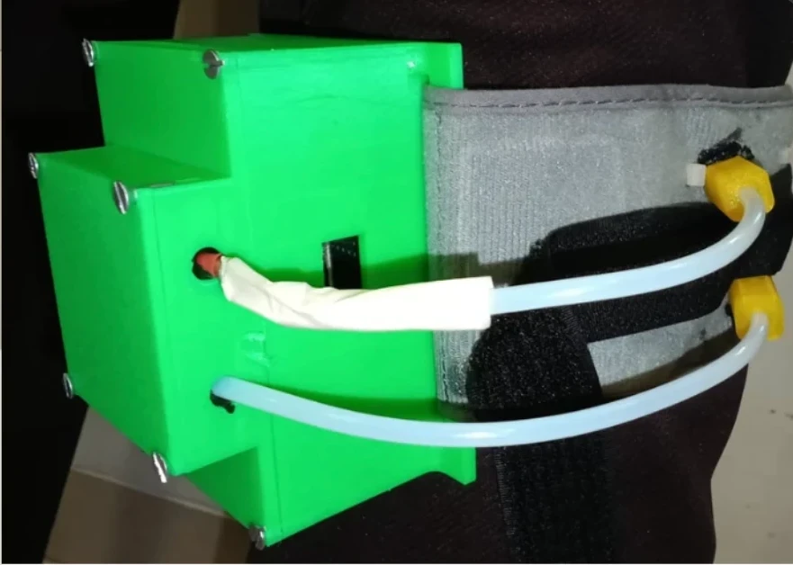

Hi, I'm Arshia! I've been a builder for as long as I can remember. As a kid I was always dreaming up "startups", and these days I actually get to build them. I'm the founder of KaamPro, an AI hiring platform for India's blue-collar workers, and I design health technology on the side. I'm also a physics nerd, a classical pianist and an aerialist.
IIM-A Ventures Top 6UN Global Innovation Challenge FinalistConrad Challenge Innovator AwardDiamond Challenge 2× Top 100 Emerging Innovators of the YearS.-T. Yau Science Award SemifinalistGovernment of Rajasthan KaamProMinistry of Education ManobalIIM-A Ventures Top 6UN Global Innovation Challenge FinalistConrad Challenge Innovator AwardDiamond Challenge 2× Top 100 Emerging Innovators of the YearS.-T. Yau Science Award SemifinalistGovernment of Rajasthan KaamProMinistry of Education Manobal
KaamPro · Industrial Training Institute outreachCSTD · designManobal · with students

ReVena · braceKaamPro · a full roomManobal · kids' sessionKaamPro · before a sessionKaamPro · Industrial Training Institute outreachCSTD · designManobal · with studentsReVena · braceKaamPro · a full roomManobal · kids' sessionKaamPro · before a session
Top 100 Emerging Innovators of the Year · Diamond Challenge
Govt. of Rajasthan
KaamPro is an AI hiring platform for India's blue-collar workforce. Workers apply by voice in their own language, AI agents handle screening and matching, and the platform keeps tracking each hire so people stay in work, not just find it.
56,000+jobseekers
11states
24employers
<5 daysto find work, from 9–10
+36%retention (2.0)
29 · 68ITIs · rural communities
KaamPro 1.0 · the job platform
Regional-language profiles that workers fill in once and reuse for every application, with simple job listings and no middlemen taking a cut of wages.
Employer verification and child-labour screening built in from day one.
Went to workers in person: classroom and courtyard sessions at 29 Industrial Training Institutes (ITIs), outreach in 68 rural communities, and job fairs covered by Dainik Jagran.
A worker told me about being dismissed several times, each time just before completing twelve months. That led me to rebuild KaamPro around retention as well as hiring.
KaamPro 2.0 · the AI agents
Interview agent runs structured voice interviews in regional languages, confirms shift and salary, and writes a summary for HR.
Matching agent ranks candidates on commute, wage expectations, shift fit and joining date, not only skills.
Retention agent checks in at 7, 30, 90 and 180 days and runs AI attrition analysis on why people leave.
Compliance agent handles labour-law alerts, age checks and bias screening, with consent-based location and optional Aadhaar.
Project: A wearable brace that detects DVT risk and responds with compression, outside the hospital.
Started after watching my grandfather struggle with bulky, bed-bound compression machines.
Tracks leg movement and blood flow, and calculates a relative Oxygen Delivery Index, because oxygen saturation alone can't show whether blood is actually reaching the leg.
When delivery drops or the leg stays still too long, the cuff inflates to 45–60 mmHg; controlled from an app.
$43.60 to build. Paper published; Top 100 Emerging Innovators of the Year.
Project: Design and Theoretical Analysis of a Two-State Anti-Disconnection Mechanism for CSTD Syringe Adaptors.
Chemotherapy drugs can harm the nurses and pharmacists who handle them. Closed-system transfer devices keep the drug sealed in, but only while every connection holds.
A syringe can accidentally unscrew from its adaptor when it's twisted during handling, opening a gap for drug, vapour or aerosol to escape.
Designed a two-state, torque-responsive lock in Creo: once engaged, the syringe and hub turn together instead of unscrewing. Modelled it and built a 3D-printed prototype.
S.-T. Yau Award semifinalist (Physics); International Academic Research Competition finalist.
Project: Ethnographic research on the emotional well-being and development of children growing up in an SOS Children's Village.
SOS Children's Villages give family-based care to children who have lost parental care. I wanted to understand how these children were doing emotionally, not just academically.
Spent six weeks with 20 children in their everyday routines, combining one-on-one interviews with observation of play, schoolwork and how they related to caregivers and each other.
Documented each child's emotional well-being and development in a written report.
The report shaped the village's education and support plans. It also deepened my understanding of the children I later worked with through Manobal.
school, papers & patents
Education & Publications
Jayshree Periwal International School
SAT 1550
School Captain. Chaired the student welfare and academic forums.
Led IDEATE, a design-thinking club of about 40 students.
Lead pianist and singer in the school orchestra.
Trinity College London
Music examinations
Nine years of Western classical piano.
Grade 8, Rock & Pop singing.
Design and Theoretical Analysis of a Two-State Anti-Disconnection Mechanism for CSTD Syringe Adaptors Published
Arshia Baid · journal paper
ReVena: peripheral perfusion, immobility and adaptive compression for DVT prevention Published
Arshia Baid · journal paper
ReVena's core design and sensing approach Provisional patent
Filed
what it's earned
Honours & awards
Innovation & Entrepreneurship
IIM-A Ventures Finalist (Top 6)
KaamPro · investment pitch, Nov 2026 · National
UN Global Innovation Challenge Finalist
KaamPro · International
Conrad Innovator Award
KaamPro · Conrad Challenge
2× Top 100 Emerging Innovators of the Year Award
Diamond Challenge · KaamPro & ReVena · International
Recognised by the Government of Rajasthan
KaamPro · State
Science & Research
International Academic Research Competition Finalist
CSTD paper · International
S.-T. Yau High School Science Award Semifinalist (Physics)
CSTD paper · International
Two research papers published
CSTD mechanism · ReVena
Social Impact & Arts
Recognised by the Ministry of Education
Project Manobal · National
Trinity College London Grade 8, Rock & Pop Singing